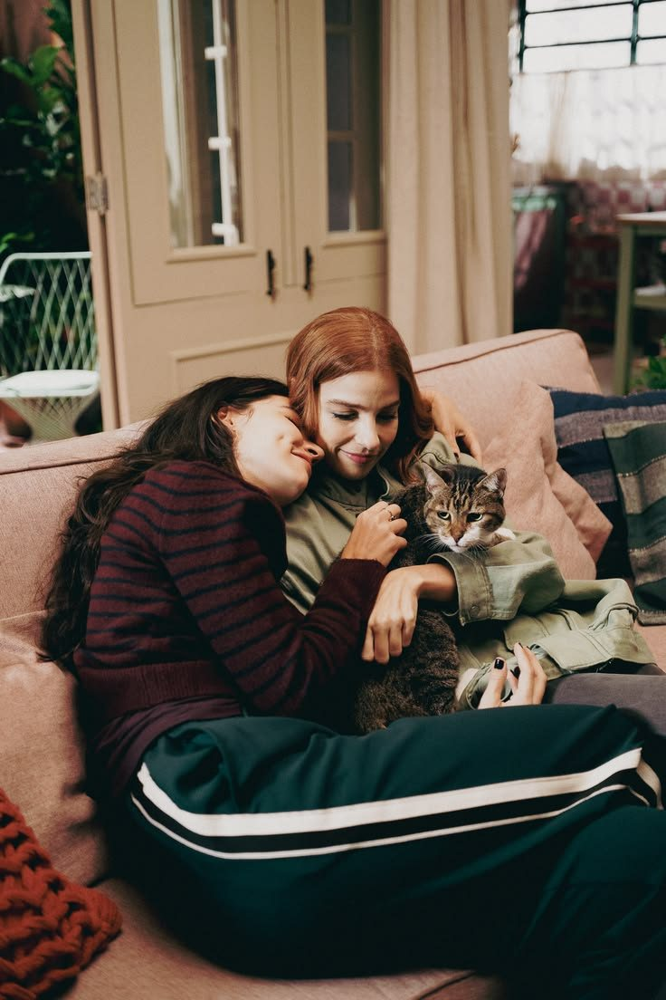

Uma fanfic de Três Graças · Loquinha
Encontrei o sol nos seus olhos
por wildshoni
Abrir a porta Começar a ler Cap. 1Tocando na sala
Na porta da geladeira
Pela casa
Sobre a história
Depois de ser expulsa de casa, Lorena precisa de um lugar pra morar, não querendo incomodar mais a família de Maggye. Sua amiga então lhe apresenta Juquinha, uma policial que está precisando de uma colega de apartamento. O que Lorena não espera, é que ao se mudar com Juquinha, ela começaria a descobrir o verdadeiro significado de felicidade.
Juquinha procurava alguém para morar com ela, se sentindo sozinha demais depois de seus pais terem mudado de cidade. Quando conhece Lorena, ela acredita ter encontrado uma amiga, sem saber que estava conhecendo a pessoa que ia remendar todos os pedaços do seu coração.
- Roommates
- Slow Burn
- Mutual Pining
- Strangers to Friends to Lovers
- Lorena precisa de um abraço
- Juquinha está em negação profunda
- As duas cuidam uma da outra
- Idiotas apaixonadas
Índice
Capítulos
Fotos na porta da geladeira
Moradoras
Toque numa foto para virar.
Quem mora aqui
Quem aparece por aqui
Site de fã · Encontrei o sol nos seus olhos no AO3